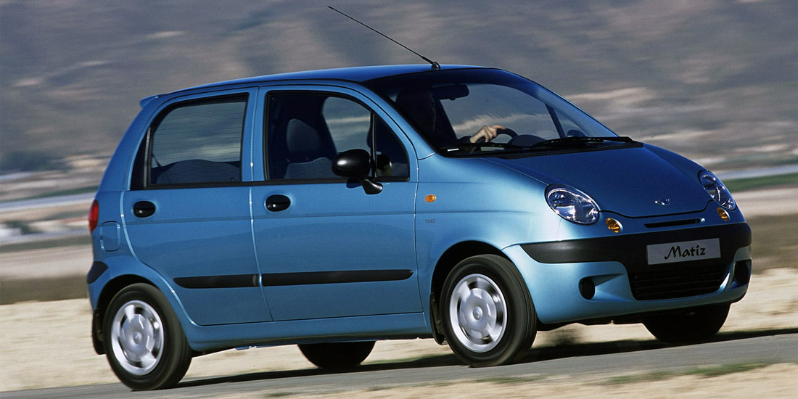

Daewoo Matiz
Вернуться назад

Хатактеристики Daewoo Matiz:
- Стоит 50-150 тысяч
- Двигатель 0.8 литра — самый маленький расход бензина, подходит больше для города, чем для трассы.
- Самая маленькая машина — можно припарковаться даже там, где обычной машине не хватит места.
- Коробка механика или автомат, автомат дороже
- Маленькая снаружи, просторная внутри, не мощная: медленно разгоняется и ехать больше 110 км/ч ей сложно.
- Эту машину можно выбрать, если хочется сэкономить на бензине, так как она его есть в 2-3 раза меньше остальных машин, и если ездить больше по городу, а не по трассам между городами.
Вернуться назад